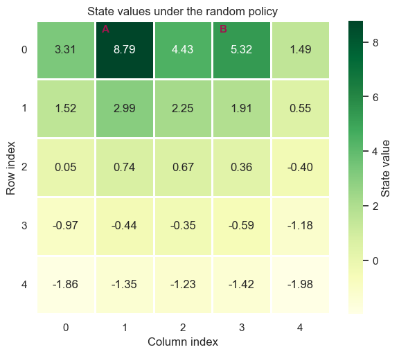
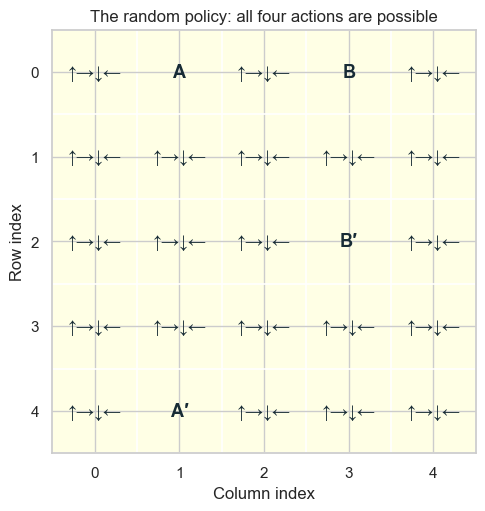
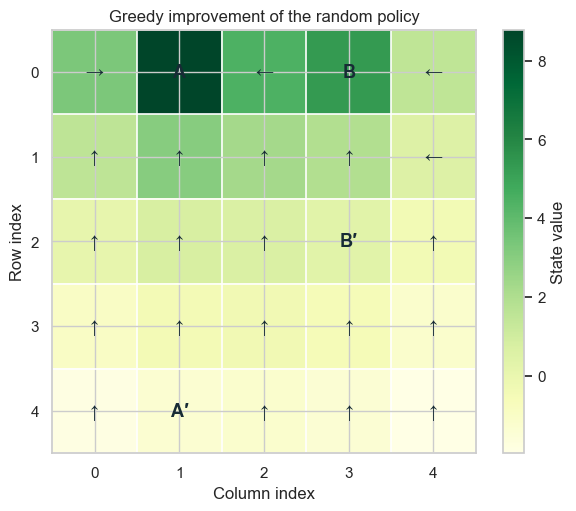
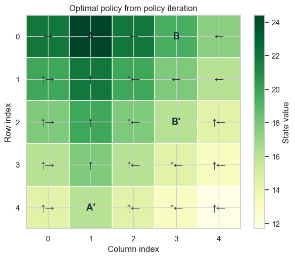
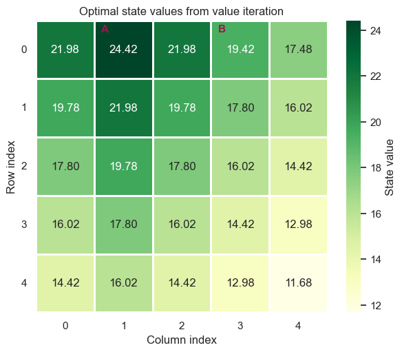
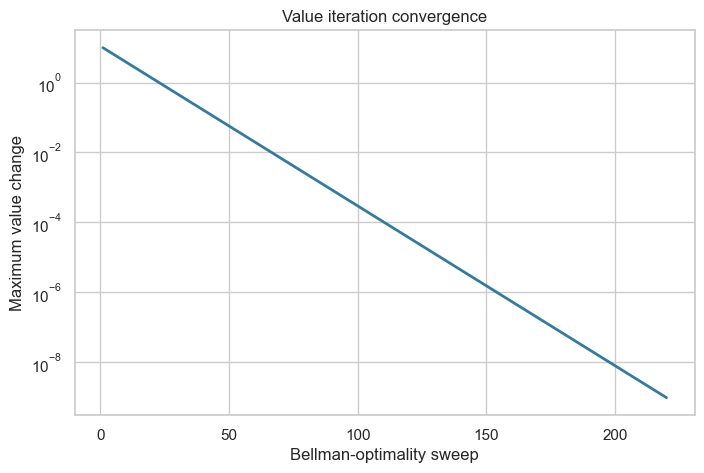

import numpy as np
import pandas as pd
import matplotlib.pyplot as plt
import seaborn as sns
sns.set_theme(style='whitegrid', context='notebook')
plt.rcParams['figure.figsize'] = (8, 5)Gridworld control: policy iteration and value iteration

This notebook continues the zero-indexed Gridworld example. The environment is now a Markov decision process (MDP) because the agent can choose its policy. We will use a model of the environment to find a policy that maximizes expected discounted return.
Rows and columns run from 0 through 4. The special transitions are (A=(0,1)A’=(4,1)) with reward (+10), and (B=(0,3)B’=(2,3)) with reward (+5).
What we will do
- Recreate the Gridworld transition and reward rules.
- Compute action values from the value function of a policy.
- Alternate policy evaluation and greedy improvement with policy iteration.
- Use value iteration to fold those two ideas into one Bellman-optimality update.
The preceding Gridworld notebook studies policy evaluation in detail. This notebook includes the same evaluator so that the control algorithms remain self-contained.
1. The zero-indexed Gridworld
At any state, the available actions are up, right, down, and left. An action that would leave the board keeps the agent in the same state and gives reward (-1). Every ordinary in-grid move has reward 0. At (A) and (B), every action triggers the listed teleport transition.
The functions below provide the known model needed by policy iteration and value iteration: given ((s,a)), they return the deterministic next state (s’) and reward (r).
GRID_SIZE = 5
GAMMA = 0.9
# The action index is used as the final axis of a policy array.
ACTION_NAMES = np.array(['up', 'right', 'down', 'left'])
ACTION_ARROWS = np.array(['↑', '→', '↓', '←'])
ACTION_DELTAS = np.array([[-1, 0], [0, 1], [1, 0], [0, -1]])
N_ACTIONS = len(ACTION_NAMES)
# source: (destination, reward, source label, destination label)
TELEPORTS = {
(0, 1): ((4, 1), 10.0, 'A', 'A′'),
(0, 3): ((2, 3), 5.0, 'B', 'B′'),
}
TARGET_LABELS = {destination: target_label
for destination, _, _, target_label in TELEPORTS.values()}
def states():
'''Yield all 25 states as zero-indexed (row, column) pairs.'''
for row in range(GRID_SIZE):
for column in range(GRID_SIZE):
yield (row, column)
def in_grid(state):
'''Return True when a zero-indexed state lies inside the board.'''
row, column = state
return 0 <= row < GRID_SIZE and 0 <= column < GRID_SIZE
def step(state, action_index):
'''Return the deterministic (next_state, reward) for one action.'''
if state in TELEPORTS:
destination, reward, _, _ = TELEPORTS[state]
return destination, reward
candidate = tuple(np.asarray(state) + ACTION_DELTAS[action_index])
if not in_grid(candidate):
return state, -1.0
return candidate, 0.0
for source, (destination, reward, source_label, target_label) in TELEPORTS.items():
print(f'{source_label} at {source} → {target_label} at {destination}, reward {reward:+.0f}')A at (0, 1) → A′ at (4, 1), reward +10
B at (0, 3) → B′ at (2, 3), reward +52. From state values to action values
For a fixed policy (), the state value (v_(s)) averages over actions. The action value keeps the first action explicit:
\[ q_\pi(s,a) = r(s,a,s') + \gamma v_\pi(s'). \]
The Gridworld is deterministic, so each ((s,a)) has exactly one (s’) and one immediate reward. The code computes all four action values at a state, then policy evaluation averages them according to the current policy.
def uniform_random_policy():
'''Return π(a|s)=1/4 for every state and every action.'''
return np.full((GRID_SIZE, GRID_SIZE, N_ACTIONS), 1.0 / N_ACTIONS)
def action_values(values, state):
'''Compute r + γV(s′) for each possible action at one state.'''
q_values = np.empty(N_ACTIONS)
for action_index in range(N_ACTIONS):
next_state, reward = step(state, action_index)
q_values[action_index] = reward + GAMMA * values[next_state]
return q_values
def evaluate_policy(policy, tolerance=1e-9, max_sweeps=10_000):
'''Evaluate a fixed policy by synchronous Bellman expectation backups.'''
values = np.zeros((GRID_SIZE, GRID_SIZE))
changes = []
for _ in range(max_sweeps):
# A fresh array makes this a synchronous sweep: every backup uses V_k.
next_values = np.zeros_like(values)
for state in states():
row, column = state
next_values[state] = policy[row, column] @ action_values(values, state)
max_change = np.max(np.abs(next_values - values))
changes.append(max_change)
values = next_values
if max_change < tolerance:
break
else:
raise RuntimeError('Policy evaluation did not converge.')
return values, np.asarray(changes)
random_policy = uniform_random_policy()
random_values, random_changes = evaluate_policy(random_policy)
example_state = (2, 2)
print(f'Random-policy evaluation converged in {len(random_changes)} sweeps.')
print(f'Action values at {example_state}:')
print(pd.Series(action_values(random_values, example_state), index=ACTION_NAMES).round(3))Random-policy evaluation converged in 156 sweeps.
Action values at (2, 2):
up 2.025
right 0.322
down -0.319
left 0.664
dtype: float64def plot_values(values, title):
'''Show a state-value table with zero-indexed row and column ticks.'''
fig, ax = plt.subplots(figsize=(7, 5.5))
sns.heatmap(values, annot=True, fmt='.2f', cmap='YlGn',
square=True, linewidths=0.8, linecolor='white',
cbar_kws={'label': 'State value'}, ax=ax)
ax.set(title=title, xlabel='Column index', ylabel='Row index')
ax.set_xticklabels(range(GRID_SIZE))
ax.set_yticklabels(range(GRID_SIZE), rotation=0)
for state, (_, _, source_label, _) in TELEPORTS.items():
row, column = state
ax.text(column + 0.12, row + 0.20, source_label,
color='#9d174d', fontsize=11, fontweight='bold')
plt.show()
def plot_policy(policy, title, values=None):
'''Draw action choices; special states show their forced-transition label.'''
fig, ax = plt.subplots(figsize=(7, 5.5))
background = np.zeros((GRID_SIZE, GRID_SIZE)) if values is None else values
image = ax.imshow(background, origin='upper', cmap='YlGn')
if values is not None:
fig.colorbar(image, ax=ax, label='State value')
for state in states():
row, column = state
if state in TELEPORTS:
label = TELEPORTS[state][2]
elif state in TARGET_LABELS:
label = TARGET_LABELS[state]
else:
chosen = np.flatnonzero(policy[row, column] > 1e-10)
label = ''.join(ACTION_ARROWS[chosen])
ax.text(column, row, label, ha='center', va='center',
color='#172b35', fontsize=13, fontweight='bold')
ax.set(title=title, xlabel='Column index', ylabel='Row index')
ax.set_xticks(range(GRID_SIZE))
ax.set_yticks(range(GRID_SIZE))
ax.set_xticks(np.arange(-0.5, GRID_SIZE, 1), minor=True)
ax.set_yticks(np.arange(-0.5, GRID_SIZE, 1), minor=True)
ax.grid(which='minor', color='white', linewidth=1.2)
ax.tick_params(which='minor', bottom=False, left=False)
plt.show()
plot_values(random_values, 'State values under the random policy')
plot_policy(random_policy, 'The random policy: all four actions are possible')

3. Greedy policy improvement
Once we have (v_), we can choose the action with the largest (q_(s,a)) at each state:
\[ \pi_{\mathrm{new}}(s) = \arg\max_a q_\pi(s,a). \]
This step does not yet guarantee an optimal policy: it improves the policy relative to the values of the current policy. At (A) and (B), every action ties because the special transition ignores the chosen direction; the code retains all tied actions equally.
def greedy_policy(values):
'''Return a policy that splits probability equally across tied best actions.'''
policy = np.zeros((GRID_SIZE, GRID_SIZE, N_ACTIONS))
for state in states():
row, column = state
q_values = action_values(values, state)
best_actions = np.flatnonzero(np.isclose(q_values, q_values.max()))
policy[row, column, best_actions] = 1.0 / len(best_actions)
return policy
first_improved_policy = greedy_policy(random_values)
plot_policy(first_improved_policy, 'Greedy improvement of the random policy', random_values)
4. Policy iteration
Policy iteration alternates two complete operations:
- Policy evaluation: calculate (v_) for the current policy.
- Policy improvement: replace that policy with ((v_)).
When the greedy step leaves the policy unchanged, the policy is optimal. This works here because we know the transition and reward model exactly.
def policy_iteration(tolerance=1e-9, max_policy_updates=50):
'''Alternate complete policy evaluation and greedy policy improvement.'''
policy = uniform_random_policy()
history = []
for update in range(max_policy_updates):
values, evaluation_changes = evaluate_policy(policy, tolerance=tolerance)
improved_policy = greedy_policy(values)
stable = np.allclose(improved_policy, policy)
history.append({
'policy update': update,
'evaluation sweeps': len(evaluation_changes),
'policy stable': stable,
})
if stable:
return values, policy, pd.DataFrame(history)
policy = improved_policy
raise RuntimeError('Policy iteration did not stabilize.')
optimal_values_pi, optimal_policy_pi, policy_history = policy_iteration()
print(policy_history.to_string(index=False))
plot_values(optimal_values_pi, 'Optimal state values from policy iteration')
plot_policy(optimal_policy_pi, 'Optimal policy from policy iteration', optimal_values_pi) policy update evaluation sweeps policy stable
0 156 False
1 220 False
2 220 False
3 220 False
4 220 True
5. Value iteration
Policy iteration evaluates one policy fully before improving it. Value iteration combines those steps by applying the Bellman optimality update directly:
\[ v_{k+1}(s) = \max_a \left[r(s,a,s') + \gamma v_k(s')\right]. \]
There is no explicit policy during the updates. After the values converge, we extract the policy by taking the greedy action at each state.
def value_iteration(tolerance=1e-9, max_sweeps=10_000):
'''Apply synchronous Bellman optimality backups until the values converge.'''
values = np.zeros((GRID_SIZE, GRID_SIZE))
changes = []
for _ in range(max_sweeps):
next_values = np.zeros_like(values)
for state in states():
next_values[state] = action_values(values, state).max()
max_change = np.max(np.abs(next_values - values))
changes.append(max_change)
values = next_values
if max_change < tolerance:
break
else:
raise RuntimeError('Value iteration did not converge.')
return values, greedy_policy(values), np.asarray(changes)
optimal_values_vi, optimal_policy_vi, value_changes = value_iteration()
max_difference = np.max(np.abs(optimal_values_pi - optimal_values_vi))
print(f'Value iteration converged in {len(value_changes)} sweeps.')
print(f'Maximum difference from policy iteration: {max_difference:.2e}')
plot_values(optimal_values_vi, 'Optimal state values from value iteration')
plot_policy(optimal_policy_vi, 'Optimal policy extracted after value iteration', optimal_values_vi)
fig, ax = plt.subplots()
ax.semilogy(np.arange(1, len(value_changes) + 1), value_changes, color='#347b9e', linewidth=2)
ax.set(xlabel='Bellman-optimality sweep', ylabel='Maximum value change',
title='Value iteration convergence')
plt.show()Value iteration converged in 220 sweeps.
Maximum difference from policy iteration: 0.00e+00

Takeaways
- A state value averages action values under a specified policy.
- Policy iteration alternates full evaluation with greedy improvement.
- Value iteration uses a maximum in every backup, then extracts a greedy policy after convergence.
- Both methods rely on the known Gridworld transition and reward model. Later, model-free methods must learn from sampled experience instead.